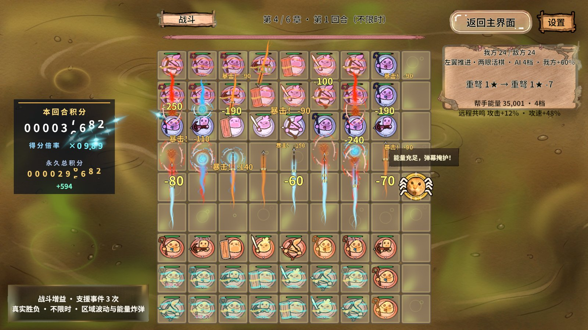
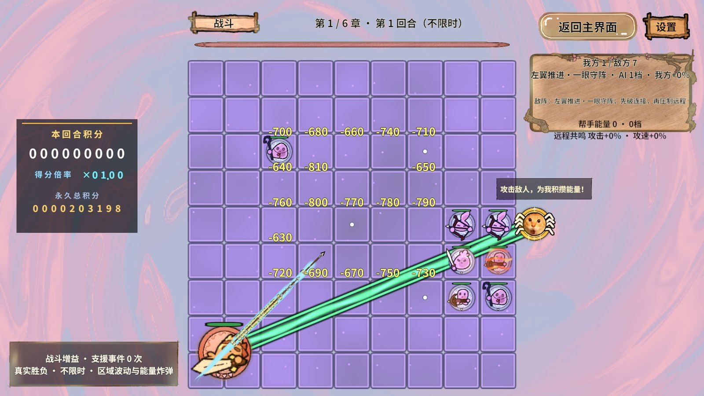
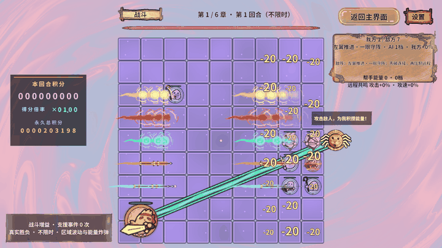

01 · 结论与交付范围
已在现有 Revolution 门面、服务、FSM 与对象池架构内优化射界查询、AI工作区、动画回调、飘字队列、HUD重复刷新和第四/第五章背景Shader。未迁移ECS，未改变攻击/伤害/气眼/AI同分优先级。
目标仍是报告中的 i7-12700H / Iris Xe 笔记本，Unity Game窗口、1920×1080、D3D11、真实PC AB，稳定80～90 FPS。本轮连接设备是 i7-13700 / RTX 4060；目标笔记本未连接，因此80～90 FPS目标尚未验收。不能把本机高帧率或局部查询倍数换算为笔记本收益。
现有负载继续保留完整动态背景、20飘字、35弹道、16近战短效预算，不降低分辨率、不关闭背景。优化前基线为 c1b1e97，同一份实际导表数据；首次失败/中断结果单列。
02 · 针对原报告实施了什么
| 热点 | 落地变化 | 失效/生命周期与边界 |
|---|---|---|
| 射界与身份查询 | FindPiece改为棋盘自有Id字典；按棋子Id缓存有序目标坐标，缓存条目/列表复用 | 拓扑、目标可见/存活、Def、攻击资格与敌弓射程变化立即重算；HP威胁评分仍实时；临时未入盘棋不污染缓存 |
| AI试算与连通块 | 主盘自有独立深试盘，副本按Id复用，移动/补子/远程整队共用有职责区分的缓冲；拓扑版本缓存棋群 | 每轮覆盖完整可变状态并重新Evaluate；真实盘只在最终提交时Move；源盘Reset清旧引用；顺序不变 |
| 动画与池请求 | 常见热资源直接从RevPool取；捕获闭包仅在冷加载；Tween getter/setter/结束回调每对象复用 | 每条反馈仍一条Tween；代次/过期检查、Kill(false)、归池与引用归还保留；没有私造对象池 |
| 飘字与血条 | 待播81项每帧一次稳定选最老八条；常见伤害文案最多128项；保留字形；缓存局部范围与相机投影；血条未变化跳过写入 | 相同时间戳保持原字典顺序；文字缩放/位置/旋转/相机/字体重建失效；回池和隐藏血条后重新初始化 |
| HUD与布局 | 阶段/回合/阵型/存活数/加成/支援/Boss血量/日志先比较再格式化；钱包与安全区只在变化时写入 | 10Hz观察不变；OnOpen强制失效；真实阶段、换轮、主将掉血回归通过；镜头动态效果保留 |
| 沼泽GPU | 九个排气口按覆盖边界跳过远处昂贵计算；周期噪声改GPU数据纹理采样 | 全屏原画、水流、油光、冒泡和毒气保留；噪声外观存在细微变化；无目标GPU性能证明 |
| 冰原GPU | 静态Voronoi冰胞预计算为512²线性数据场，运行时采样；超范围/未绑定仍原算法 | 寒潮、雪、折射和原画流动仍实时；8位量化非逐像素等价；需要目标GPU复测 |
03 · 缓存收益：相同输入的局部CPU对照
最新控制台链接生产规则，固定48棋、重复五轮取中位；非Unity整帧，不代表GPU或目标FPS。
真实配置目录：G:\RevRoot\MyRevGame\RevGame_Client\UnityProject\RevGame.Unity\Assets\GameRes\Data 固定48棋4800次查询：未缓存中位ms=13.203，缓存=0.301；稳定段分配Bytes=0 射界命中=28800，重算=48 48棋100次深快照含气眼刷新：原版中位ms=4.613，工作区=3.417；复用棋子=24000 查询缓存通过：31947条断言
4,800次射界计算13.203→0.301 ms约下降97.7%；100次深快照含气眼刷新4.613→3.417 ms约下降25.9%。固定查询稳定段的.NET分配计数为0，只覆盖该方法与已预热缓冲；不宣称Unity战斗零GC。
缓存版六章三次、18段20秒采样中射界累计48,906命中/0重算（预热后窗口）；伤害文字12,951命中/61新值，命中率99.53%。固定盘没有移动，试盘次数为0，不能用这些数据证明移动场景的100%命中或快照收益。动态变盘的正确性另由随机变盘与180回合回放验证。
交付前重复同一控制台测试仍通过31,947条断言：射界13.302→0.309 ms，快照4.643→3.575 ms。重复测量存在波动，原始两次摘要都保留。
04 · 整帧测量：完整保留波动
改前完整六章平均386～420 FPS、P95 3.33～3.77 ms；首轮优化第一轮前五章约427～451 FPS、P95约3.0～3.34 ms，但第六章及后续重复出现明显整机/编辑器状态变化，后续约190～220 FPS。未取得足够频率、温度和调度证据归因。
查询缓存版本三轮188.50～227.57 FPS、P95 6.183～7.896 ms、P99约19～21 ms。CPU/GPU工作量与墙钟帧间隔不相等；不能把这些不同时段的数值直接宣称为整场提升。GPU、主线程、渲染线程并行/父子采样不可相加，EditorLoop也不能从整帧简单扣除。
下面均来自唯一完成运行的原始摘要。GC为Editor整帧有效ProfilerRecorder，包含编辑器/字体/采样/业务，不等同纯战斗分配。自定义反馈标记为该段均值，不与昨天另一台设备的包含子调用标记直接比较。
| 批次 | 章 | 次 | 采样帧 | 攻击数 | 平均FPS | P95 ms | P99 ms | 最慢 ms | GPU P50 ms | GC KiB/帧 | 反馈 ms/帧 | 射界命中 | 试盘次数 |
|---|---|---|---|---|---|---|---|---|---|---|---|---|---|
| 改前六章 | 1 | 1 | 7787 | 1013 | 389.34 | 3.767 | 13.870 | 23.50 | 0.951 | 29.39 | -1.0000 | 未采集 | 未采集 |
| 改前六章 | 2 | 1 | 8016 | 1060 | 400.79 | 3.333 | 13.587 | 21.24 | 0.873 | 29.05 | -1.0000 | 未采集 | 未采集 |
| 改前六章 | 3 | 1 | 7726 | 1305 | 386.28 | 3.764 | 13.833 | 30.08 | 0.881 | 31.19 | -1.0000 | 未采集 | 未采集 |
| 改前六章 | 4 | 1 | 8181 | 1173 | 408.95 | 3.441 | 13.588 | 25.05 | 0.972 | 26.80 | -1.0000 | 未采集 | 未采集 |
| 改前六章 | 5 | 1 | 8407 | 1239 | 420.24 | 3.368 | 10.034 | 18.94 | 0.860 | 19.32 | -1.0000 | 未采集 | 未采集 |
| 改前六章 | 6 | 1 | 8225 | 1296 | 411.19 | 3.407 | 11.132 | 178.05 | 0.831 | 22.32 | -1.0000 | 未采集 | 未采集 |
| 首轮优化 | 1 | 1 | 9022 | 1013 | 451.09 | 2.954 | 6.205 | 18.94 | 0.833 | 18.00 | 0.0616 | 未采集 | 未采集 |
| 首轮优化 | 2 | 1 | 8540 | 1060 | 426.99 | 3.288 | 8.747 | 26.85 | 0.821 | 18.64 | 0.0647 | 未采集 | 未采集 |
| 首轮优化 | 3 | 1 | 8578 | 1305 | 428.81 | 3.342 | 12.804 | 27.94 | 0.734 | 18.71 | 0.0662 | 未采集 | 未采集 |
| 首轮优化 | 4 | 1 | 8627 | 1173 | 431.26 | 3.289 | 11.178 | 29.15 | 0.833 | 19.97 | 0.0655 | 未采集 | 未采集 |
| 首轮优化 | 5 | 1 | 8823 | 1239 | 441.15 | 3.179 | 5.905 | 19.24 | 0.821 | 18.18 | 0.0650 | 未采集 | 未采集 |
| 首轮优化 | 6 | 1 | 4786 | 1222 | 239.25 | 5.269 | 18.765 | 1298.39 | 0.816 | 243.17 | 0.0858 | 未采集 | 未采集 |
| 首轮优化 | 1 | 2 | 3835 | 1013 | 191.72 | 6.924 | 18.632 | 266.26 | 0.751 | 40.90 | 0.0905 | 未采集 | 未采集 |
| 首轮优化 | 2 | 2 | 3748 | 1060 | 187.37 | 7.059 | 18.763 | 259.50 | 0.828 | 39.65 | 0.0930 | 未采集 | 未采集 |
| 首轮优化 | 3 | 2 | 3794 | 1305 | 189.70 | 7.170 | 18.390 | 260.07 | 0.840 | 39.14 | 0.0972 | 未采集 | 未采集 |
| 首轮优化 | 4 | 2 | 3701 | 1173 | 185.03 | 7.120 | 18.702 | 258.80 | 0.766 | 43.26 | 0.0965 | 未采集 | 未采集 |
| 首轮优化 | 5 | 2 | 3736 | 1239 | 186.78 | 7.070 | 18.282 | 258.58 | 0.814 | 38.13 | 0.0973 | 未采集 | 未采集 |
| 首轮优化 | 6 | 2 | 3599 | 1296 | 179.90 | 7.420 | 19.054 | 259.00 | 0.854 | 39.25 | 0.1059 | 未采集 | 未采集 |
| 首轮优化 | 1 | 3 | 3958 | 1013 | 197.89 | 6.639 | 18.307 | 260.20 | 0.730 | 36.44 | 0.0879 | 未采集 | 未采集 |
| 首轮优化 | 2 | 3 | 3356 | 1060 | 167.80 | 8.042 | 20.031 | 259.13 | 0.899 | 40.69 | 0.1047 | 未采集 | 未采集 |
| 首轮优化 | 3 | 3 | 3550 | 1305 | 177.49 | 7.456 | 19.041 | 260.33 | 0.856 | 43.94 | 0.1045 | 未采集 | 未采集 |
| 首轮优化 | 4 | 3 | 3439 | 1173 | 171.92 | 7.936 | 19.879 | 262.00 | 0.809 | 43.98 | 0.1048 | 未采集 | 未采集 |
| 首轮优化 | 5 | 3 | 3633 | 1239 | 181.62 | 7.177 | 18.848 | 261.91 | 0.817 | 39.59 | 0.1012 | 未采集 | 未采集 |
| 首轮优化 | 6 | 3 | 3662 | 1296 | 183.09 | 7.050 | 18.975 | 260.54 | 0.822 | 43.09 | 0.1030 | 未采集 | 未采集 |
| 查询缓存版本 | 1 | 1 | 4423 | 1013 | 221.11 | 6.514 | 19.036 | 32.64 | 0.719 | 35.72 | 0.0847 | 100.00% | 0 |
| 查询缓存版本 | 2 | 1 | 4332 | 1060 | 216.58 | 6.731 | 19.342 | 34.20 | 0.797 | 38.88 | 0.0852 | 100.00% | 0 |
| 查询缓存版本 | 3 | 1 | 4045 | 1305 | 202.20 | 7.201 | 20.152 | 25.96 | 0.937 | 38.07 | 0.0979 | 100.00% | 0 |
| 查询缓存版本 | 4 | 1 | 4259 | 1173 | 212.94 | 6.848 | 19.530 | 23.69 | 0.764 | 36.72 | 0.0900 | 100.00% | 0 |
| 查询缓存版本 | 5 | 1 | 4245 | 1239 | 212.20 | 6.836 | 19.650 | 35.81 | 0.784 | 39.14 | 0.0922 | 100.00% | 0 |
| 查询缓存版本 | 6 | 1 | 4124 | 1296 | 206.20 | 7.040 | 19.678 | 35.91 | 0.799 | 36.99 | 0.0977 | 100.00% | 0 |
| 查询缓存版本 | 1 | 2 | 4231 | 1013 | 211.49 | 6.951 | 19.972 | 36.36 | 0.750 | 36.13 | 0.0878 | 100.00% | 0 |
| 查询缓存版本 | 2 | 2 | 4117 | 1060 | 205.74 | 7.253 | 20.270 | 51.21 | 0.812 | 39.78 | 0.0909 | 100.00% | 0 |
| 查询缓存版本 | 3 | 2 | 4211 | 1305 | 210.54 | 6.841 | 19.591 | 25.70 | 0.770 | 37.07 | 0.0937 | 100.00% | 0 |
| 查询缓存版本 | 4 | 2 | 4320 | 1173 | 216.00 | 7.007 | 19.277 | 51.38 | 0.740 | 39.42 | 0.0888 | 100.00% | 0 |
| 查询缓存版本 | 5 | 2 | 4247 | 1239 | 212.31 | 6.775 | 19.704 | 23.42 | 0.787 | 36.88 | 0.0927 | 100.00% | 0 |
| 查询缓存版本 | 6 | 2 | 4449 | 1296 | 222.37 | 6.389 | 19.341 | 33.03 | 0.790 | 35.88 | 0.0908 | 100.00% | 0 |
| 查询缓存版本 | 1 | 3 | 4551 | 1013 | 227.48 | 6.369 | 19.028 | 50.41 | 0.728 | 37.87 | 0.0825 | 100.00% | 0 |
| 查询缓存版本 | 2 | 3 | 4552 | 1060 | 227.57 | 6.183 | 18.970 | 28.32 | 0.785 | 35.04 | 0.0817 | 100.00% | 0 |
| 查询缓存版本 | 3 | 3 | 4371 | 1305 | 218.39 | 6.498 | 19.239 | 36.28 | 0.864 | 39.28 | 0.0896 | 100.00% | 0 |
| 查询缓存版本 | 4 | 3 | 4377 | 1173 | 218.61 | 6.677 | 19.420 | 35.56 | 0.729 | 39.01 | 0.0886 | 100.00% | 0 |
| 查询缓存版本 | 5 | 3 | 3771 | 1239 | 188.50 | 7.896 | 21.200 | 29.33 | 0.959 | 39.51 | 0.1056 | 100.00% | 0 |
| 查询缓存版本 | 6 | 3 | 4077 | 1296 | 203.80 | 7.480 | 20.219 | 33.83 | 0.820 | 41.26 | 0.0997 | 100.00% | 0 |
| 持续十分钟版本 | 4 | 1 | 120105 | 58070 | 200.17 | 7.444 | 20.082 | 286.56 | 0.773 | 39.06 | 0.1063 | 99.81% | 96 |
| 十次往返版本 | 1 | 1 | 2317 | 497 | 231.62 | 6.110 | 19.176 | 22.62 | 0.535 | 33.94 | 0.0785 | 100.00% | 2 |
| 十次往返版本 | 1 | 2 | 2419 | 497 | 241.88 | 5.960 | 18.303 | 21.70 | 0.532 | 34.18 | 0.0733 | 100.00% | 2 |
| 十次往返版本 | 1 | 3 | 2304 | 497 | 230.28 | 6.845 | 18.939 | 26.40 | 0.537 | 34.19 | 0.0764 | 100.00% | 2 |
| 十次往返版本 | 1 | 4 | 2374 | 497 | 237.05 | 6.226 | 18.677 | 23.33 | 0.507 | 34.35 | 0.0749 | 100.00% | 2 |
| 十次往返版本 | 1 | 5 | 2379 | 497 | 237.86 | 5.886 | 18.321 | 23.28 | 0.494 | 34.49 | 0.0750 | 100.00% | 2 |
| 十次往返版本 | 1 | 6 | 2271 | 497 | 227.08 | 6.539 | 19.174 | 52.79 | 0.550 | 39.90 | 0.0778 | 100.00% | 2 |
| 十次往返版本 | 1 | 7 | 2479 | 497 | 247.73 | 5.785 | 17.937 | 24.04 | 0.437 | 32.68 | 0.0711 | 100.00% | 2 |
| 十次往返版本 | 1 | 8 | 2442 | 497 | 244.05 | 5.854 | 18.120 | 23.36 | 0.495 | 33.14 | 0.0724 | 100.00% | 2 |
| 十次往返版本 | 1 | 9 | 2286 | 497 | 228.52 | 6.213 | 19.018 | 25.29 | 0.560 | 35.21 | 0.0787 | 100.00% | 2 |
| 十次往返版本 | 1 | 10 | 2386 | 497 | 238.50 | 6.111 | 18.716 | 37.74 | 0.481 | 38.81 | 0.0745 | 100.00% | 2 |
| 最终委托版本 | 4 | 1 | 4710 | 1173 | 235.46 | 6.335 | 18.432 | 52.17 | 0.412 | 36.88 | 0.0805 | 100.00% | 3 |
05 · 持续战斗与反复进出：作业身份
| 标签 | runId | 请求 | 状态/清理 | 错误 | 返回逻辑/棋子图集引用 |
|---|---|---|---|---|---|
| 改前六章 | 20261030-024514-40495f32 | 1～6章 / 20s × 1 | completed / True | 0 | 0 / 0 |
| 首轮优化 | 20261030-030243-14194766 | 1～6章 / 20s × 3 | completed / True | 0 | 0 / 0 |
| 查询缓存版本 | 20261030-040139-5be687ff | 1～6章 / 20s × 3 | completed / True | 0 | 0 / 0 |
| 持续十分钟版本 | 20261030-043826-8646e0cf | 4～4章 / 600s × 1 | completed / True | 0 | 0 / 0 |
| 十次往返版本 | 20261030-044856-47be8e8b | 1～1章 / 10s × 10 | completed / True | 0 | 0 / 0 |
| 最终委托版本 | 20261030-045727-408797f7 | 4～4章 / 20s × 1 | completed / True | 0 | 0 / 0 |
600秒采样使用预分配约600,001项值类型帧缓冲（约数十MiB），由测试持有，不是生产战斗缓存。采样期每秒维持存活负载；测试不证明常规玩家难度或Boss全技能热态。十次往返以正式GameFlow交接、棋盘释放和棋子图集引用归零验收；Unity缓存/编辑器内存尚不能据此宣称无长期泄漏。
十分钟作业实际600.003秒、120,105帧、58,070次攻击，存活48～52棋；射界103,948命中/202重算=99.806%，文字25,891命中/432新值=98.359%，试盘96次/副本复用4,913次。平均200.174 FPS、P95 7.444 ms、P99 20.082 ms、最慢286.558 ms，存在明显长帧；未获得频率/温度/GC栈与逐帧因果证据，不承诺所有帧稳定。十次往返每段完整10秒、48棋、497次攻击、错误0，返回逻辑0/棋子图集引用0。
十分钟与十次往返完成后，最后补充棋盘反馈委托缓存和HUD血条稳定读写委托；最终委托版本另行短时采样与真实反馈回归。此前长时数据保留其原版本标识，不冒充最后一次改动后的十分钟测量。缓存率是业务查询/文案复用率，不是尚未测量的CPU L1/L2硬件缓存命中率。
06 · 规则与真实画面验收
- 查询/失效/随机变盘/棋群顺序/工作区生命周期：31,947条控制台断言通过。
- 同一实际导表数据、三种子六章共180回合：179胜/1负，18场Boss胜；最终JSON与优化前逐字段完全一致，包含命中、伤害、时间、死亡、技能、血量、积分与胜负。
- Boss扩展1,624、支援与节奏1,177、风暴34、Boss九场142条断言通过。
- 最终真实AB密集反馈/HUD：通过 4965 条Play断言：120次合并、100目标控频、职业原画/即时伤害/35条连续齐射、避让/透明、居中、战斗换位与阶段清理；峰值飘字=20，弹道=35。新增阶段/回合/重复刷新/主将HP缓存断言通过。
- 沼泽与冰原实际GPU1920×1080渲染、时间变化、效果/速度归零、独立原画流动和棋盘边缘保护通过。它们证明动态与资产有效，不证明Iris Xe耗时下降或与旧噪声逐像素相同。
- 最终PC实际构建59包、527映射；六章背景各自无包依赖，其它包不引用背景；新增数据纹理随所属章加载，非Sprite、不进图集、不保留可读像素副本。Android Shader预检通过；本轮Android AB构建与Android设备运行未执行。
此前密集反馈夹具在try外嵌套取得积分预览租约而超时，已改为只持有自己的租约并finally释放。冷启动就绪断言第一次把playing字段误写成isPlaying而超时，已按真实响应修正，不计作玩法失败/通过。
终端生成csproj的dotnet build受现有DOTween依赖引用缺失失败，不能当作通过。Unity实际编译诊断为0错误，并执行真实Play回归；没有修改插件或生成工程引用来掩盖此差异。报告file URL的内置浏览器预览被协议策略拦截，未绕过；已做UTF-8、锚点、图片尺寸和本地链接检查，但不宣称浏览器视觉排版验收通过。
默认全量攻击回归仍在“首手时刻到期真实提交一手”失败。已从c1b1e97导出只读源码副本，用同一导表复跑，基线也在同条断言失败（现有BatchCount=2，旧断言期待1）；没有降低期待或把全套默认回归报告成通过。
本轮初期额外过滤射线死亡/隐藏候选造成一局回放伤害和积分不同，已恢复原射线语义；最新180回合完整一致。以此说明缓存优化也必须验证规则顺序，不能只看胜场总数。
07 · 复测入口与目标设备验收
正式测试从StartScene冷Play、隔离剧情/积分、真实PC AB开始。使用真实注册能力game.perf.begin，参数label/first/last/seconds/repeats；game.perf.state核对唯一runId、completed、cleaned=true、cancelled=false、errors=0及完整段数。调用接受不等于测试完成。
六章复测：first=1,last=6,seconds=20,repeats=3。热点持续：first=4,last=4,seconds=600,repeats=1。重复进出：first=1,last=1,seconds=10,repeats=10。密集反馈：game.perf.feedback-begin/state。控制台：dotnet run --project RevGame_Client/Tests/CombatAttackRegression/CombatAttackRegression.csproj -c Release -- RevGame_Client/UnityProject/RevGame.Unity/Assets/GameRes/Data query-cache。
笔记本必须再次执行上述相同输入，记录实际分辨率/画质/棋数/攻击数/预热/GPU有效样本，并与2026-10-29数据并排。80 FPS帧预算12.5 ms，90 FPS为11.11 ms；平均FPS之外看P95、P99和长帧比例、持续段与往返稳定性。当前无该设备结果，所以不承诺已达标。
08 · ECS与框架可行性
当前不需要全面迁移ECS。瓶颈诊断中第四章完整背景GPU11.50→停绘3.65 ms是GPU成本证据，迁移棋子模型不能自动减少背景片元或UGUI/TextMesh透明绘制。本轮已经通过普通棋盘私有工作区获得局部数据复用收益。
保持GameFlow/FSM/RevScope生命周期、RevTimer固定规则时钟、RevPool、RevResManager引用计数、唯一伤害结算与现有GM/RevMCP接线；未修改框架快照Core/Implementation。框架可行性结论：当前规模可在现有公开门面上实现可测的缓存与GPU资产优化，无需先替换框架架构。是否有进一步Burst/Jobs/ECS收益需目标设备纯规则CPU证据和隔离同规则原型。
尚未处理到可称“极致”的程度：EnemyFormationPlanner冷构图仍有有界快照、透明材质/子层绘制仍消耗批次、字体/Tween仍有Editor分配。透明排序与全部视觉预算保留，未把批次降低或GPU实例化开关当优化成功。
09 · 原始证据与保留规则
详细JSON、控制台日志与原始PNG在忽略目录.codex/work/perf-2026-10-30，交付目录只保留本HTML/Markdown和必要JPEG/GIF。没有ZIP、Profiler.raw/.data或内存快照；旧压力入口SaveProfile已移除。
收尾通过RevMCP正式执行editor.stop、game.story.test-disarm，并核对playing=false、compiling=false；恢复原非Play编辑器状态，不留测试进度开关。
参照文件：战斗性能优化规则.html、2026-10-29诊断报告、revolution-framework/SKILL.md及code-style/verify-and-test、revolution-ai-automation/SKILL.md及plans；代码基线c1b1e97。当前报告复用项目绿金浅色工程手册样式。
实际画面：全背景、密集数字与连续弹道



后续补充 · 计分数量阈值与GPU对照
阅读详细补充报告：两轮.NET及两轮Unity自带Mono独立宿主测得稳定查询从1颗玩家棋获益，动态分支为0棋直算、≥1棋缓存。包含完整数量曲线、失效负结果、GPU诊断与最终Editor/冷AB复验待完成说明。